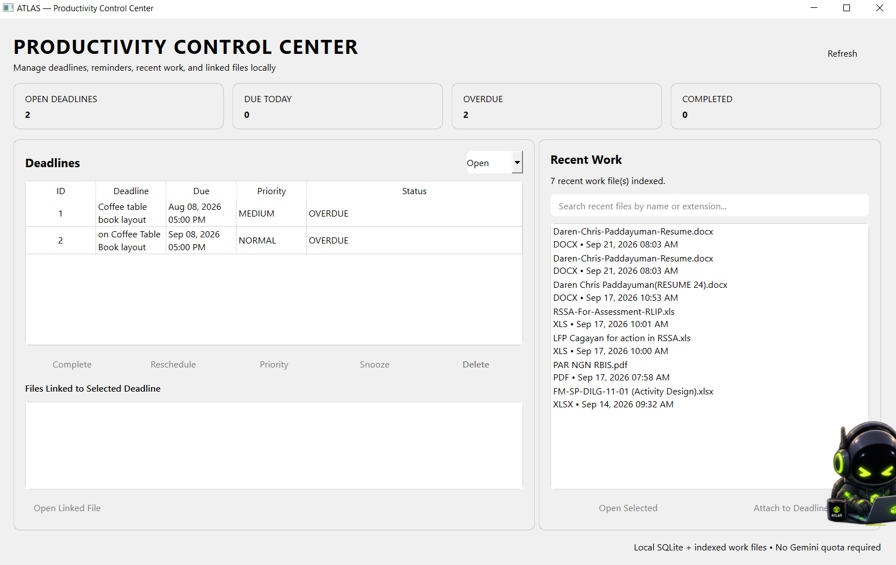

Main Dashboard
Conversation workspace with quick access to recent files, Excel, deadlines, command controls, activity, diagnostics, and mascot settings.
A Windows desktop assistant that combines conversational AI with practical local tools. ATLAS can work with documents, spreadsheets, recent files, applications, tasks, and deadlines through a unified desktop interface.
ATLAS is designed as a working desktop productivity environment rather than a chat window alone. The interface brings AI assistance and local productivity controls into one place.
Conversation workspace with quick access to recent files, Excel, deadlines, command controls, activity, diagnostics, and mascot settings.

Local deadline management with status tracking, priorities, recent-work indexing, linked files, rescheduling, snoozing, and completion controls.
Analyze and summarize supported documents from the desktop workflow.
Open, inspect, clean, and analyze spreadsheet data.
Locate recent work, list files, and open local resources.
Launch productivity applications such as Excel and QGIS.
Create and manage priorities, due dates, status, and linked work files.
Gemini-powered natural-language reasoning integrated with local tools.